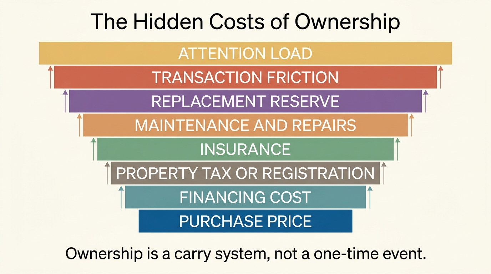
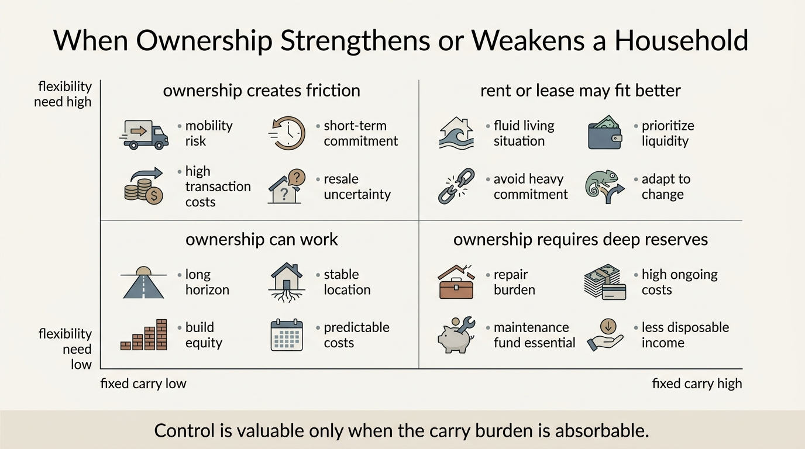

The Hidden Costs of Ownership
Ownership is usually sold as a milestone and priced like a transaction. Households focus on purchase price, financing rate, and the reassuring claim that owning builds wealth. The harder truth is that ownership is not a transaction. It is a carry system. Once taxes, insurance, maintenance, replacement cycles, transaction drag, and attention burden are counted honestly, many assets look less like simple wealth builders and more like ongoing claims on cash flow and flexibility.
This problem matters most in housing because housing is the largest ownership decision most households ever make. It also matters for vehicles, second properties, and any asset that demands recurring upkeep while also being financed, insured, or locally taxed. Households know these costs exist in the abstract. They still underweight them because the costs arrive in different rhythms, different accounts, and different psychological categories. Mortgage payments feel central. Insurance spikes, capital replacements, transfer taxes, furnishing drag, and maintenance downtime feel incidental. They are not incidental. They decide whether ownership improves resilience or quietly weakens it.
Core thesis: ownership cost should be measured as a full carry system, not a purchase event. The relevant stack includes financing, taxes, insurance, maintenance, replacement reserves, transaction friction, and time burden. Households that ignore those layers often mistake fixed control over an asset for net financial strength.

The Accounting Error Starts With Monthly Payment Thinking
Most ownership decisions are framed around whether the monthly payment appears manageable. That frame is incomplete because it compresses principal and interest into the main signal while pushing everything else into the background. A homeowner may look at mortgage, taxes, and insurance. Even that is incomplete. The asset also imposes repair timing risk, replacement cycles, service labor, transaction costs on exit, and a reserve requirement that renters do not bear in the same way.
This is why homeownership can feel affordable until the first large repair year or the first forced move. The Consumer Financial Protection Bureau notes that buyers must budget not only for mortgage and utilities but also for maintenance, repairs, and closing costs. Freddie Mac makes the same point from a borrower-education angle. That guidance is basic, but the planning failure remains common because one-time and irregular costs are mentally discounted more aggressively than recurring scheduled bills.
The Census Bureau's housing cost measures help frame the official side of the issue. Selected monthly owner costs include mortgage payment, utilities, fuels, insurance, taxes, and fees. That is already broader than the simplified language many households use. Even so, those measures still do not capture the full cash burden of deferred maintenance, replacement cycles, furnishing turnover, or the opportunity cost of locked capital.
Ownership Converts Uncertainty Into Responsibility
The economic attraction of ownership is control. The hidden price of control is responsibility. Renters outsource part of the volatility in roofs, water heaters, structural repairs, and building systems to a landlord or association. Owners absorb that volatility directly. A vehicle owner absorbs depreciation, repairs, registration, insurance, and replacement timing. A second-home owner adds distance friction, vacancy risk, and duplicated maintenance systems. Ownership can still be rational, but the real comparison is not owning versus paying nothing. It is owning versus renting while retaining flexibility and externalizing part of the tail risk.
This distinction matters even more in a higher-rate, higher-insurance environment. When financing was unusually cheap, many hidden ownership costs were masked by the belief that appreciation would overwhelm them. That belief is weaker now. Insurance costs are more visible, property-tax burdens remain real, and capital replacements cost more because labor and materials cost more. A house can still be a useful long-duration asset. It is no longer safe to assume that every ownership path naturally compounds into superior wealth.
The same pattern appears beyond housing. A household that owns multiple cars, recreational assets, or a lightly used second property may accumulate symbolic wealth while degrading actual cash resilience. The issue is not whether those assets have value. The issue is whether their carry cost is proportionate to the strategic benefit they actually provide.
The Opportunity Cost Is Not Only Financial
Hidden ownership cost also includes time and attention. Scheduling repairs, managing contractors, shopping insurance, handling registration and tax paperwork, maintaining reserves, and making replacement decisions all consume operating bandwidth. That burden does not show up on a statement, but it changes the household's real decision capacity. Two assets with similar long-run financial cost can impose very different cognitive and logistical overhead.
This is one reason ownership should be analyzed alongside optionality. An ownership-heavy household may be less able to relocate, downshift, change jobs, or absorb a temporary income shock. When the household owns expensive fixed systems, exit becomes costly. The rent-versus-buy question is only one expression of that broader logic. Ownership can increase net worth and still reduce strategic range.

How To Measure Ownership More Honestly
- Separate acquisition cost from carry cost. The down payment or purchase price is not the full decision variable.
- Create a replacement-reserve schedule. Roofs, HVAC systems, appliances, tires, and major repairs should be annualized rather than treated as surprises.
- Price exit friction in advance. Transaction fees, moving cost, time-to-sale risk, and re-entry cost all matter.
- Track attention load. If an asset creates recurring management work, that burden belongs in the decision.
- Compare against the flexibility alternative. Renting, leasing less, or owning fewer heavy assets may preserve capital for more valuable uses.
Once this accounting is done, many households discover that ownership is only superior under narrower conditions than they assumed. Stable time horizon, strong reserve base, good local fit, and willingness to manage the asset all matter. Without those conditions, ownership often converts cash into fragility rather than resilience.
Known, Inferred, And Unknown
| Category | Assessment |
|---|---|
| Known | Official household-cost guidance from CFPB, Freddie Mac, and Census measures shows that true owner cost extends beyond principal and interest. |
| Known | Housing ownership embeds taxes, insurance, utilities, fees, and maintenance obligations that renters do not bear in the same structure. |
| Known | Closing costs and transaction friction create meaningful entry and exit drag, which makes short-horizon ownership especially vulnerable. |
| Inferred | Households systematically underprice irregular maintenance, replacement cycles, and attention burden when evaluating ownership choices. |
| Unknown | How many ownership decisions that appear wealth-building on paper would still look attractive after consistent carry-system and optionality accounting. |
The Practical Correction
The correction is not anti-ownership ideology. Ownership can still be rational when the asset is used heavily, the horizon is long, reserves are deep, and the household wants the control ownership provides. The correction is disciplined accounting. Households need to treat ownership as an operating system with recurring carry, not as a one-time capital event with a marketing story attached.
That shift also improves comparisons across asset choices. A household can then ask the right question: does this ownership structure improve long-run resilience after including financing, maintenance, tax drag, replacement reserves, transaction friction, and the time burden of carrying it. That question is less exciting than the promise of building equity. It is also closer to the truth.
Further Reading Inside The Site
This article extends The Rent vs Buy Reversal, The Mortgage Lock-In Trap, and The Asset-Rich, Cash-Poor Paradox. Together they map how ownership can create value in the right conditions while still weakening liquidity and optionality when the carry system is ignored.
Source List
Consumer Financial Protection Bureau. Closing costs. Accessed April 25, 2026.
Freddie Mac. Budgeting for homeownership. Accessed April 25, 2026.
U.S. Census Bureau. Selected Monthly Owner Costs. Accessed April 25, 2026.
Consumer Financial Protection Bureau. How the total loan costs stacked up in 2023. Published 2024.
Board of Governors of the Federal Reserve System. Report on the Economic Well-Being of U.S. Households in 2024: Savings and Investments. Published 2025.